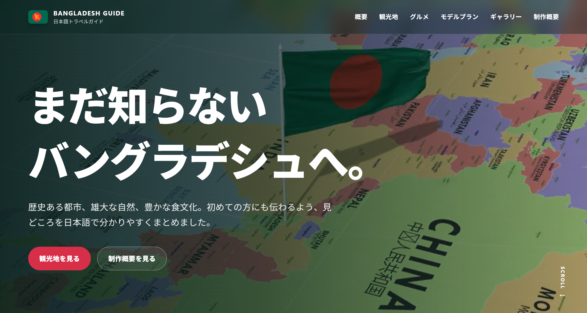
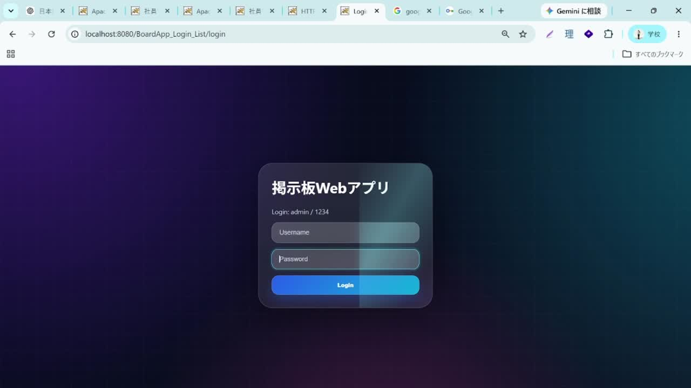
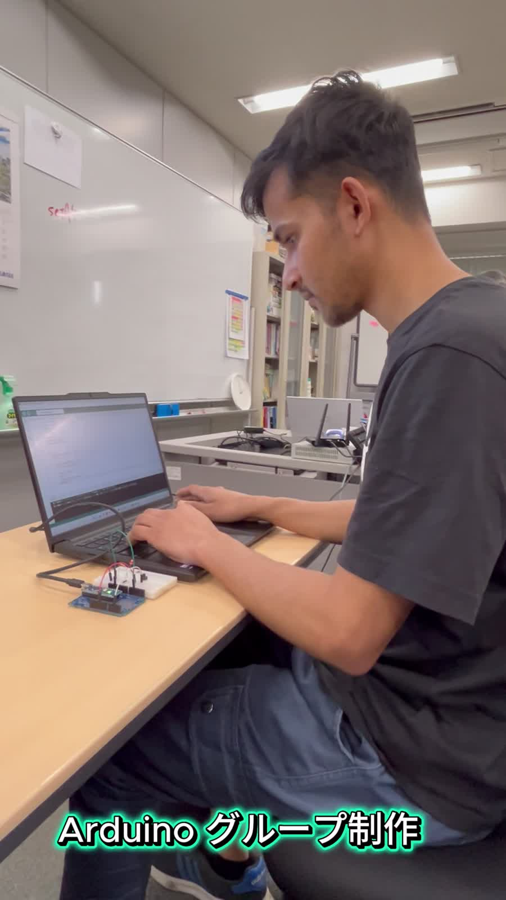

HTML
構造的で分かりやすいWebページの作成
2027年卒業予定 / ITエンジニア
専門学校東京テクニカルカレッジ情報処理科で、 Java・Oracle Database・SQL・Webアプリケーション開発を学んでいます。 自ら考えて行動し、チームと協力しながら最後までやり切る エンジニアを目指しています。
自己紹介を見る現在、専門学校でJava・C・SQLを中心にIT技術を学んでいます。 高校時代からHTML・CSS・JavaScriptを独学し、 Web制作にも取り組んできました。
制作では「まず原因を考える」「調べる」「試す」を大切にし、 エラーを一つずつ解決することを心がけています。
構造的で分かりやすいWebページの作成
レスポンシブ対応とモダンなUIデザイン
ユーザーが操作できる動きのあるWebサイト制作
オブジェクト指向によるアプリケーション開発
プログラミングの基礎と論理的思考
データベース設計とデータ操作
Selected Works
Web制作、Java開発、チーム制作を通して身につけた 課題解決力と実装力をご紹介します。

観光地・文化・写真情報を複数ページで整理した旅行ガイドサイトです。 情報を探しやすい構成、レスポンシブ対応、 視覚的に伝わるUIを意識して制作しました。

4人チームで開発した掲示板システムです。 ログイン機能、データベース連携、 一覧表示機能の開発を担当しました。

イベント処理とゲームロジックの学習を目的に制作。 操作性、スコア管理、画面の変化を意識して実装しました。

Arduinoを活用し、LED制御やセンサー処理を実装する 組み込み開発にチームで取り組みました。
4人チーム ・ Webアプリケーション開発
掲示板Webアプリケーションの制作では、 4人チームで役割分担を行い、 機能開発・エラー調査・動作確認を進めました。 メンバーと情報を共有しながら、 協力して課題を解決することを大切にしました。
HTML・CSS・JavaScriptを独学で学び、 Web制作を始めました。
Fiverrを通して約1年間Web制作に取り組み、 クライアントの要望をWebサイトとして形にする経験をしました。
Java・C・SQLを学び、 チーム開発やデータベースを使用した アプリケーション制作に挑戦しています。
接客経験を通して、 相手の話を聞き、 分かりやすく伝える力を身につけました。
エラーが起きたときに原因を調査し、 仮説を立てながら解決まで粘り強く取り組みます。
チームメンバーと情報を共有し、 相手の意見を聞きながら協力して開発を進めます。
分からないことをそのままにせず、 自分で調べて試しながら新しい技術を身につけます。
今後はJava・SQLなどの基礎をさらに深め、 設計から開発・テストまで対応できるエンジニアを目指します。 チームで協力しながら、 ユーザーや企業の課題を技術で解決できる人材になりたいです。
ポートフォリオのソースコードや、 これまでに制作した開発プロジェクトを公開しています。
ITエンジニアとしての就職・インターンシップ、 Web開発に関するご相談など、 お気軽にお問い合わせください。